세무 · 노무 실무 가이드
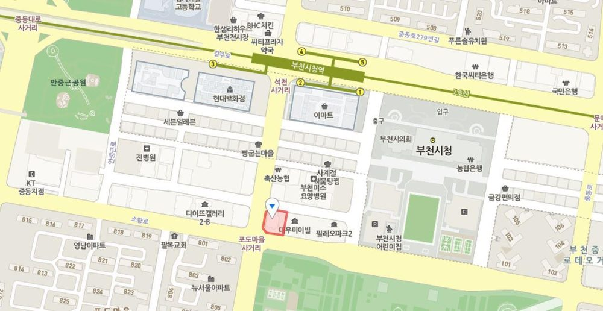
- 원제우세무사
- 010-3489-4567 / 사무실 032-321-4521
- 이메일 · 팩스
- taxmancall@gmail.com / 팩스 02-6280-4521
- 주소
- 경기도 부천시 소향로 135 부일빌딩 3층
이 안내서는 2026년 11월 현재 공개된 법령·국세청·고용노동부 자료 기준이며, 2027.1.1. 이후 개정 사항은 별도로 안내해 드립니다. 법인별 사실관계에 따라 결론이 달라질 수 있습니다.
목차
세무사 약력 및 제공 서비스
원제우 세무사/경영지도사 약력
- 현) 원제우 세무사 사무소 대표
- 현) 부천세무서 청원 심의 위원
- 현) 부천시청 심의 위원
- 전) 남부천세무서 국세 심의 위원
- 전) 부천시청 세무분야 전문 상담위원
- 전) 인천지방세무사회 법인세, 소득세 감리위원 · 청년세무사위원
- 전) 중소기업 비즈니스지원단 자문의원
- 전) 대림그룹 계열사 에이플러스디(주) 회계세무 자문 및 실무
- 전) 세무법인 지율 상속증여양도 담당 세무사
- 전) 애경그룹 유통사업부 회계팀·재경팀 근무
제공 서비스
- 세무사와 사무실 직원이 함께하는 카톡 단톡방: 인건비 신고, 직원 입·퇴사 등 일상 업무는 단톡방으로, 대표님 개인 업무는 세무사와 1:1로 진행합니다.
- 대기업 회계·재무팀 경험 기반 업무 처리: 경리 담당자 교육과 법인 회계 처리 방식까지 안내합니다.
- 상속·증여·양도 등 재산 상담 및 신고: 사업체와 별도로 대표님 부동산 취득, 증여, 상속까지 함께 컨설팅합니다. 법인과 대표님의 자산을 함께 설계할 수 있습니다.
법인사업자 세무대행 서비스 범위
| 영역 | 제공 내용 | 주기 |
|---|---|---|
| 회계 | 적격증빙(세금계산서·계산서·법인카드·현금영수증·인건비 신고) 정리, 거래 건별 회계처리 | 매월 |
| 원천세 신고 | 근로·사업·기타·일용소득 원천세 신고·납부. 반기별 납부는 6월·12월에 신청하고 승인을 받아야 합니다. | 월별 또는 반기별 |
| 부가가치세 | 1/25(전년 2기 확정) · 4/25(1기 예정) · 7/25(1기 확정) · 10/25(2기 예정). 말일이 휴일이면 다음 영업일. | 연 4회 |
| 노무 | 사업장 4대보험 개설신고(자동이체, 두루누리 지원 여부 등), 직원 입·퇴사 신고 | 수시 |
| 법인세 신고 | 결산 후 세무조정(업무용승용차·기업업무추진비·감가상각비 한도 등), 세액공제·감면 요건 검토 | 연 1회 |
| 소명·재산세 | 세무조사·국세청 소명 대행, 양도소득세·증여세·상속세 | 필요 시 |
법인사업자는 면세사업을 하더라도 개인 면세사업자와 달리 사업장현황신고 대상이 아니며, 면세 수입은 법인세 신고로 반영됩니다.
요청사항 · 홈택스 수임동의
처음 시작할 때 아래 자료를 보내주시면 기장과 신고가 빠르게 시작됩니다. 해당하는 항목에 체크해 주세요.
| 체크 | 항목 | 세부 내용 |
|---|---|---|
| □ | 임대차계약서 사본 | 전대차인 경우 전대차계약서(건물주 동의·승낙 표시), 소유주 확인서 |
| □ | 인허가증 사본 | 인허가 업종이면 허가·등록·신고증 |
| □ | 법인 계좌 정보 | 은행 ____________ / 계좌 ____________ |
| □ | 주주명부 | 주주 현황. 매년 법인세 신고 때 반영되므로 변동이 있으면 바로 알려주세요. |
| □ | 정관 | 정관에 적힌 사업목적만 영위할 수 있고, 배당·임원 보수·퇴직금 규정을 확인하는 기준이 됩니다. |
| □ | 홈택스 ID·권한 | 법인 명의 홈택스 ID, 세무대리인 수임동의(03장 참고) |
| □ | 법인 차량 정보 | 자가: 차량등록증 앞뒤면 / 리스·렌트: 계약서, 상환 스케줄 / 자동차보험 가입 확인서(업무전용보험 여부 포함) |
| □ | 카드단말기·POS | 사용하는 경우 담당자 성명·연락처 |
| □ | 퇴직연금 | 미가입 / DC형 / DB형 / IRP |
| □ | 사업 관련 보험 | 화재보험, 배상책임보험 등 가입 확인서 |
홈택스 세무대리인 수임동의 하기
세무사가 대표님 대신 신고하려면 먼저 홈택스에서 수임동의를 해주셔야 합니다. 3단계면 끝납니다.
1단계. 홈택스 로그인 (공동·금융인증서 또는 간편인증)
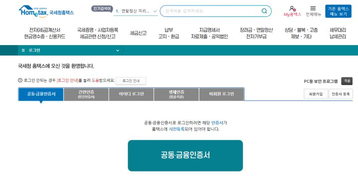
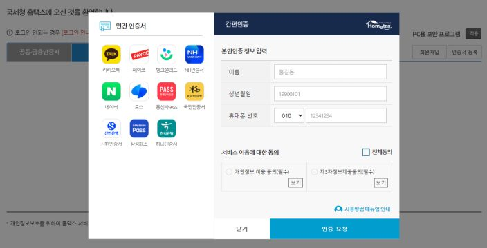
2단계. 세무대리·납세관리 → 나의 세무대리 수임동의
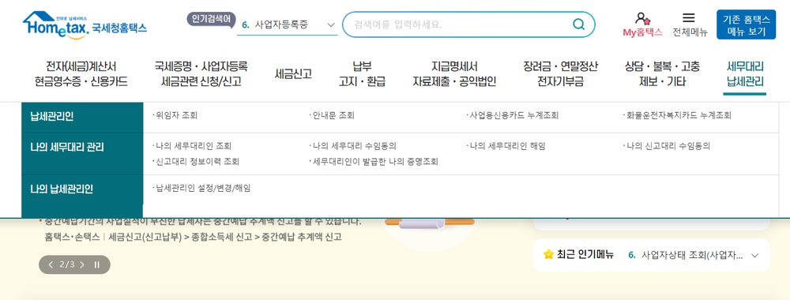
3단계. 수임 동의 여부 체크 후 확인
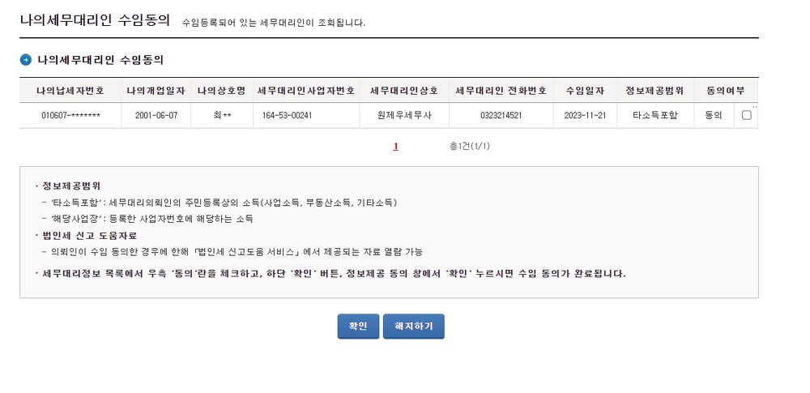
주식회사 설립 기본정보
설립은 법무사를 통해 진행하시길 권해드립니다. 아래 항목을 미리 정해두면 등기가 빨라집니다.
| 항목 | 작성 방법 / 예시 | 메모 |
|---|---|---|
| ① 상호 | 한글상호 필수 (예: 주식회사 원택스). 영문상호 선택 (예: WONTAX Co.,Ltd.) | |
| ② 법인 도장 | 1인 대표는 법인 인감도장 1개가 필수입니다. 상호 확정 후 제작(저렴한 것은 15,000원 안팎, 30분 정도). | |
| ③ 공고방법 | 신문공고(전국 일간지 중 선택) 또는 현재 운영 중인 홈페이지 주소 | |
| ④ 본점 주소 | 설립 후 법인 명의로 임대차계약과 사업자등록이 가능한 주소. 설립 후 임대인과 법인 간 임대차계약서가 필요합니다(세무서 제출용). | |
| ⑤ 자본금 | 1주당 금액(100·500·1,000·5,000·10,000원 중 선택) × 발행할 주식 총수 = 총 자본금 / 설립 당시 납입 자본금은 총 자본금 중 일부 예) 5,000원 × 100,000주 = 5억원 중 1,000만원 납입 | |
| ⑥ 대표·주주 구성 | 지분율은 향후 배당, 임원 보수 비교(지배주주 판정), 증여·상속에 영향을 줍니다. 아래 표에 작성해 주세요. | |
| ⑦ 감사 | 지분 0% 1인 (성명·주민번호·주소·휴대폰) | |
| ⑧ 사업목적 | 주 사업을 맨 위에 구체적으로 나열 예) 전자제품 도소매업 / 화장품 도소매업 / 온라인 쇼핑몰 / 경영컨설팅업 등 | |
| ⑨ 결산기 | 보통 1.1 ~ 12.31 | |
| ⑩ 기업형태 | 일반 주식회사 / 예비 사회적기업 / 벤처기업 중 선택 |
대표자·주주 구성표 (작성란)
| 구분 | 연락처 | 성명 | 주민번호 | 지분 | 주민등록등본상 주소 |
|---|---|---|---|---|---|
| 대표이사 | |||||
| 주주 | |||||
| 주주 | |||||
| 주주 |
설립 비용 (예시)
| 항목 | 예시 | 설명 |
|---|---|---|
| 등록면허세 | 자본금 100만원 + 수도권 과밀억제권역 내 → 약 405,000원 자본금 1,000만원 + 과밀억제권역 외 → 약 135,000원 | 자본금 약 2,800만원까지는 최저세액이 적용되어 같습니다. 과밀억제권역은 서울 전역, 인천(남동유치지역 제외), 경기 일부 등. |
| 설립등기 신청비 | 약 20,000원 | 등기소 납부 |
| 법무사 수수료 | 별도 | 법무사 설립 대행 시 |
인감카드 · 등기부 발급
설립 등기가 끝나면 가까운 등기소에서 법인인감카드를 발급받습니다. 최초 발급 수수료는 없습니다.
| 준비물 | 내용 |
|---|---|
| 대표자 | 대표자 신분증, 법인 인감도장, 등기사항전부증명서, 신청서 |
| 신청서 작성 포인트 | 상호·등기번호·본점 주소는 등기사항전부증명서 기재 그대로 / 인감제출자 자격: 인감제출자 자격은 사내이사·대표이사 등 / 인감카드 비밀번호 6자리 숫자 / 수수료: 최초 발급 시 없음 |
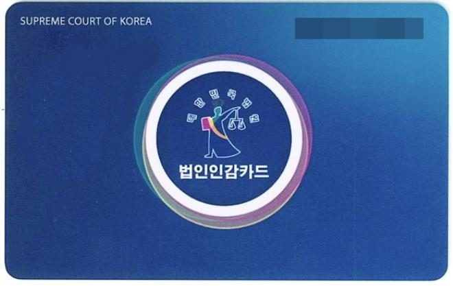
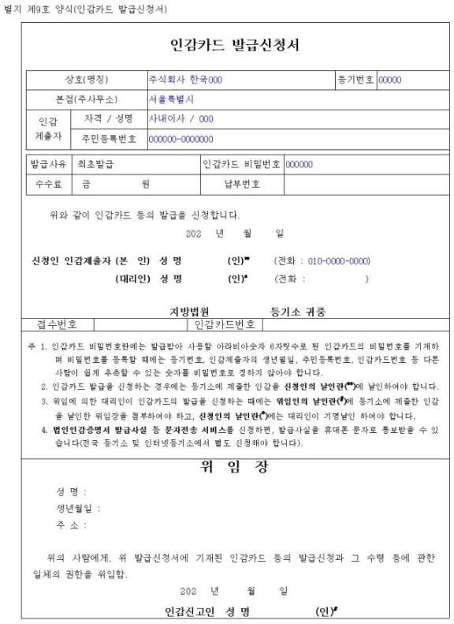
법인 등기사항전부증명서 발급 안내
인터넷등기소(www.iros.go.kr)에서 바로 발급할 수 있습니다. 은행·세무서 제출용은 발급일로부터 3개월 이내여야 하는 경우가 많습니다.
| 순서 | 방법 |
|---|---|
| 1 | 인터넷등기소 접속 → 등기부등본 열람·발급 |
| 2 | 상호 검색: 등기소, 법인구분 등 선택 후 상호 입력 |
| 3 | 결제: 신용카드·계좌이체·휴대폰 소액결제·간편결제(카카오페이·네이버페이 등) 선택 후 결제 |
| 4 | 열람·발급 후 출력 또는 PDF 저장 |
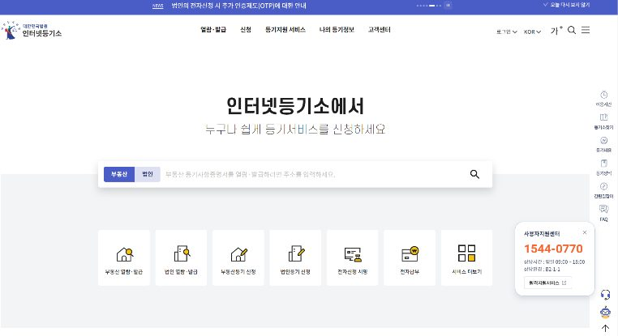
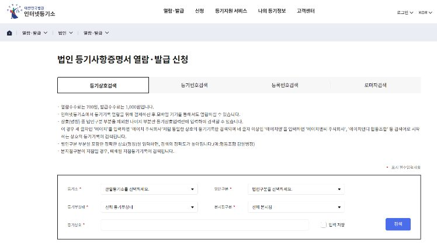
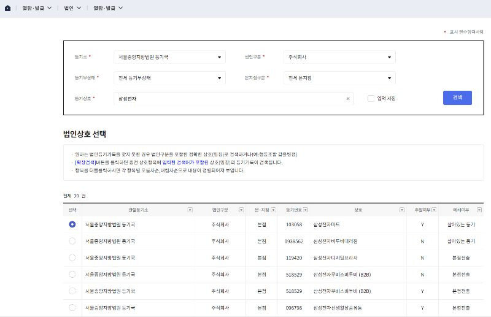
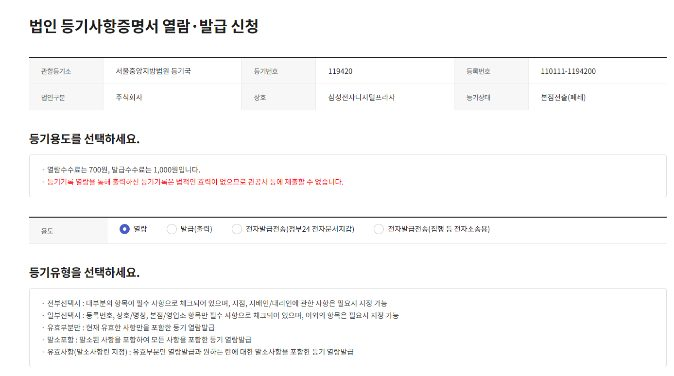
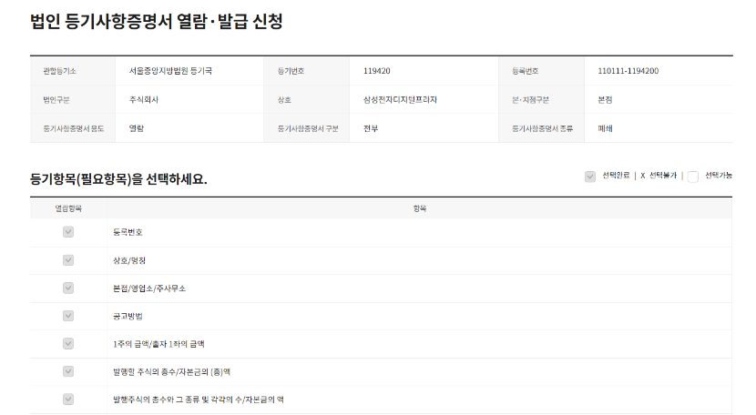
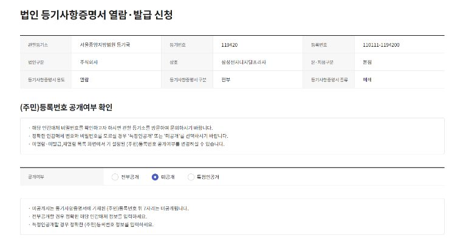
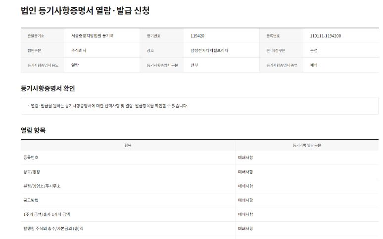
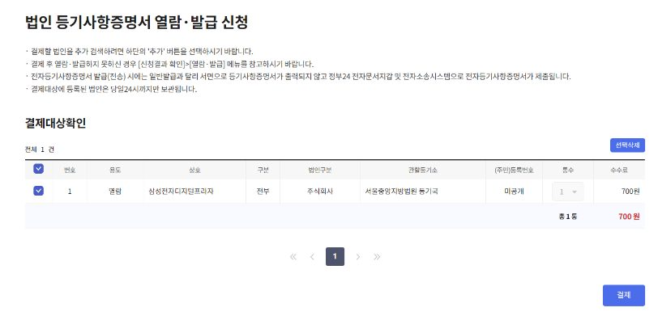
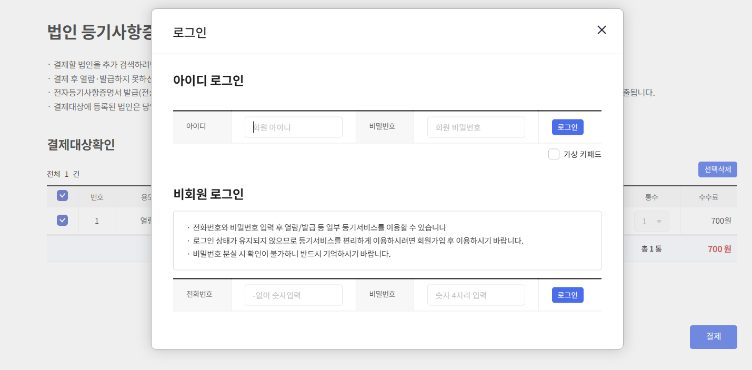
사업자등록 · 법인통장 · 인증서
필요 서류 (법인 영리사업자)
| 번호 | 서류 | 비고 |
|---|---|---|
| 1 | 법인설립신고 및 사업자등록신청서 | 작성 대행 |
| 2 | 정관 사본 | 필수 |
| 3 | 법인 등기사항전부증명서 | |
| 4 | (법인 명의) 임대차계약서 사본 | 사업장을 임차한 경우 필수 |
| 5 | 주주 또는 출자자 명세서 | 필수 |
| 6 | 허가·등록·신고증 사본 | 허가 전 등록 시 허가신청서 등 사본 또는 사업계획서 |
| 7 | 자금출처명세서 | 금지금 도·소매업, 액체·기체연료 도매업, 차량용 주유소·가스충전업, 가정용 연료 소매업, 재생용 재료 수집·판매업, 과세유흥장소 영위자 |
| 8 | 현물출자명세서 | 현물출자 법인 |
| 9 | 대표자 신분증 사본 | 필수 |
각종 신청서 서식: 국세청(www.nts.go.kr) 홈페이지에서 내려받을 수 있습니다.
업태·업종 정하기
참고할 사업자등록증이 있으면 사진을 찍어 보내주세요. 주업종을 먼저 정하고 필요한 부업종을 나열합니다.
| 구분 | 업종 (예: 업태/종목) |
|---|---|
| 주업종 | |
| 부업종 1 | |
| 부업종 2 | |
| 부업종 3 |
특정 업종은 인허가가 먼저 나와야 사업자등록이 가능합니다.
주주 등의 명세서를 사업자등록 때 제출하지 않거나 누락·불분명하게 제출하면 해당 주식(출자지분) 액면금액(출자가액)의 0.5% 가산세가 있습니다. 이후 주식 변동이 있으면 주식 등 변동상황명세서도 법인세 신고 때 제출해야 하며, 미제출·누락 시 1% 가산세 대상입니다(제출기한 후 1개월 이내 제출하면 50% 감면). — 법인세법 시행규칙 별지 제9호서식 작성방법
법인통장·법인카드 개설과 홈택스 인증서
은행 방문 시 준비서류
| 준비물 | 설명 |
|---|---|
| 필수 서류 | 사업자등록증 · 등기사항전부증명서(발급 3개월 이내) · 법인인감증명서(발급 3개월 이내) · 주주명부 · 방문자 신분증 |
| 도장 | 법인인감을 통장 도장으로 쓰면 법인인감만 가져가시면 됩니다. 대표님 외 다른 분이 통장을 관리한다면 사용인감도장과 사용인감계(법인인감 날인 + 사용인감 날인)를 준비합니다. |
| 대리 방문 | 대표자가 아닌 분이 방문하면 위임장과 방문자 신분증이 필요합니다. |
| 은행별 추가 | 은행마다 정관, 임대차계약서를 요구할 수 있으니 방문 전에 확인하세요. |
개설 직후 알아두면 좋은 점
- 출금 한도: 처음에는 출금 한도가 설정되며, 매출 세금계산서를 제출하면 한도를 풀어주거나 첫 몇 개월은 한도가 있는 등 은행별 규정이 다릅니다. 방문 때 꼭 확인하세요.
- 법인카드 한도: 설립 초기에는 한도가 생각보다 낮을 수 있습니다. 큰 금액을 결제해야 하는데 한도가 부족하면 대표님 개인카드로 결제한 뒤 관련 자료를 보내주세요(가지급금·가수금 정리가 필요합니다).
- 인터넷뱅킹: 가입 신청 후 대표님 PC에서 로그인하여 은행용 인증서(금융인증서 등)를 발급받으세요.
세금계산서 발행용 인증서·보안카드
| 방식 | 대상 | 내용 |
|---|---|---|
| 전자세금용 인증서 | 세금계산서·계산서를 자주 발행 | 은행에서 전자세금계산서 발급용 인증서를 추가 발급(유료) |
| 보안카드 | 가끔 발행 | 가까운 세무서 방문 신청(사업자등록증 사본, 법인인감증명서, 법인도장, 대표자 신분증). 평생 무료이나 발급할 때마다 보안카드 번호를 입력해야 합니다. |
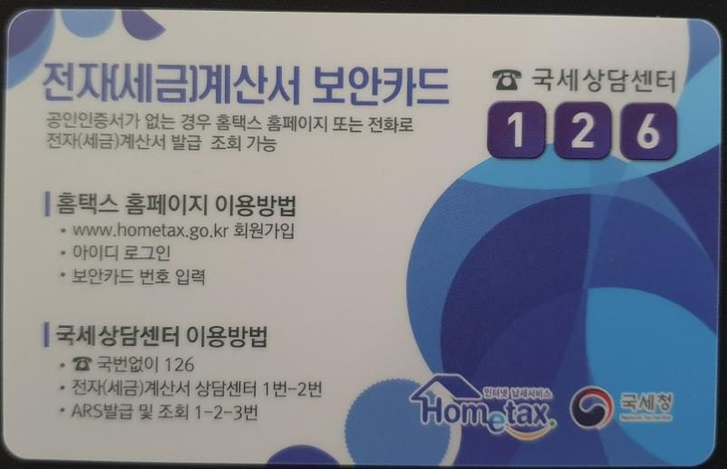
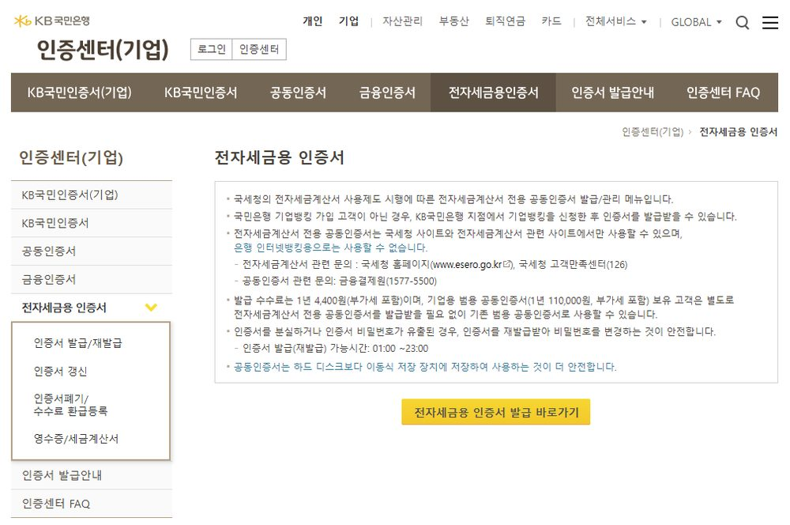
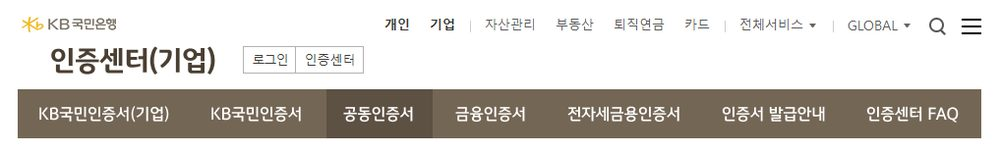
홈택스에서 이용 가능한 인증서
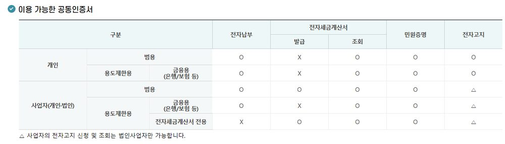
법인사업자는 전자고지 신청·조회가 가능하고, 용도제한용(은행·보험) 인증서는 세금계산서 발급이 되지 않습니다.
홈택스 회원가입 및 인증서 등록
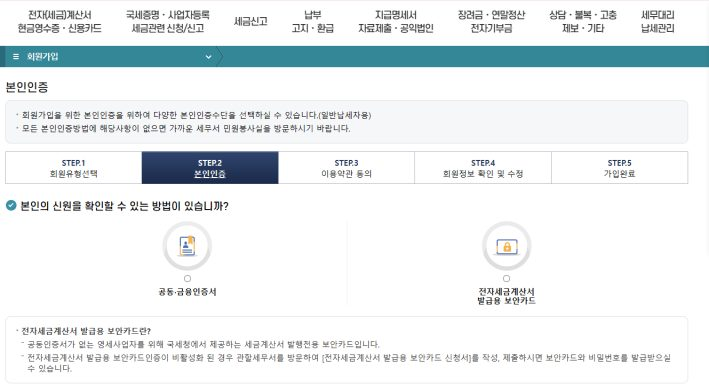
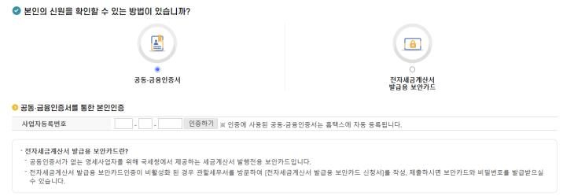
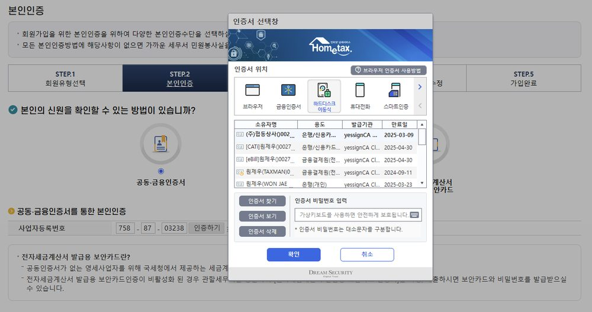
2027년 세무 신고 일정 (12월 결산 법인)
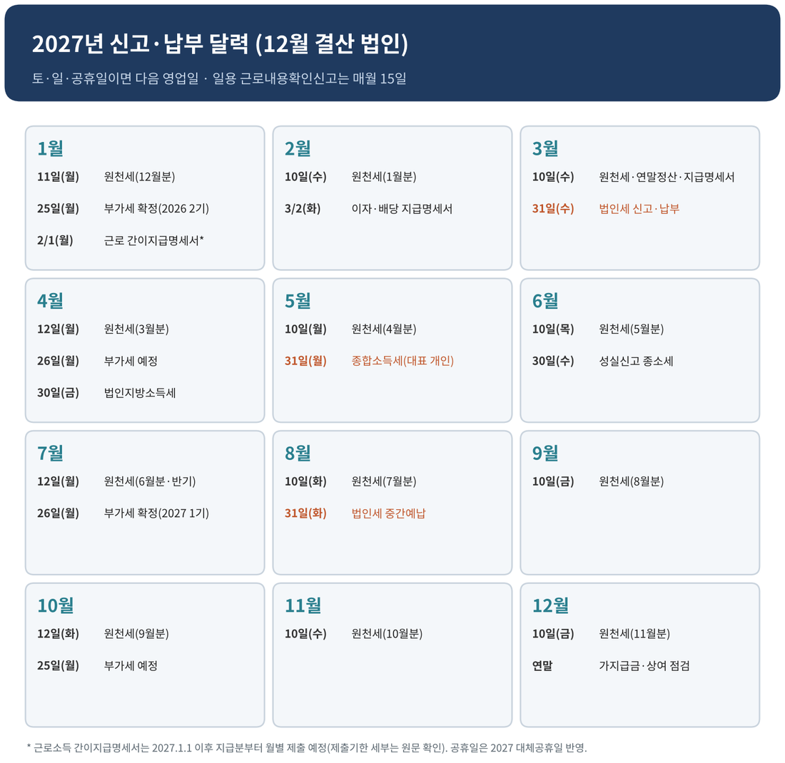
토요일·일요일·공휴일이 기한이면 다음 영업일까지입니다. 아래 날짜는 2027년 대체공휴일을 반영해 계산했습니다.
| 기한 | 신고·납부 내용 | 설명 |
|---|---|---|
| 1/11(월) | 원천세 납부 (12월분) | 매월 10일(1/10 일요일). 반기납부 승인 사업장은 7/10·1/10 연 2회 |
| 1/15(금) | 일용근로자 근로내용확인신고 (12월분) | 일용직 고용 시 매월 15일 |
| 1/25(월) | 부가가치세 확정 신고·납부 | 2026년 2기(7~12월) |
| 2/1(월) | 근로소득 간이지급명세서 (2026 하반기분) | 2026년까지는 반기 제출 · 1/31이 일요일 |
| 3/2(화) | 이자·배당소득 지급명세서 | 2/28(일)·3/1(공휴일)로 3/2까지 |
| 3/10(수) | 2026년 귀속 연말정산 마무리, 근로소득 지급명세서 | 입사 전 근무지 자료 필요. 1월 중순 별도 안내 |
| 3/31(수) | 법인세 신고·납부 | 2026 사업연도. 매출·비용 확정 |
| 4/26(월) | 부가가치세 예정 신고·납부 | 2027년 1기 1~3월 (4/25 일요일) |
| 4/30(금) | 법인지방소득세 신고·납부 | 성실신고확인 대상 소규모법인은 법인세·지방소득세도 이 시기 |
| 5/31(월) | 종합소득세 신고·납부 (대표 개인) | 법인 급여 외 사업·기타·이자·배당소득이 있으면 합산 신고 |
| 6/30(수) | 성실신고확인대상자 종합소득세 | 개인사업을 병행하는 경우 |
| 7/26(월) | 부가가치세 확정 신고·납부 | 2027년 1기 (7/25 일요일) |
| 8/31(화) | 법인세 중간예납 | 직전 사업연도 세액 기준 또는 상반기 가결산 실적 |
| 10/25(월) | 부가가치세 예정 신고·납부 | 2027년 2기 7~9월 |
| 매월 10일 | 원천세 신고·납부 | 4/12 · 7/12 · 10/12는 휴일 때문에 순연 |
| 매월 말일 | 일용직·3.3% 사업소득 지급명세서 | 지급한 달의 다음 달 말일 |
2026 → 2027 달라지는 점 한눈에
| 항목 | 2026 | 2027 | 근거 |
|---|---|---|---|
| 최저시급 | 10,320원 | 10,700원 | 최저임금법 제10조, 고용노동부 고시 |
| 최저 월급 (주 40시간, 209시간) | 2,156,880원 | 2,236,300원 | 〃 |
| 국민연금 보험료율 | 9.5% (각 4.75%) | 10.0% (각 5.0%) | 국민연금법 제88조 (2025년 개정 단계 인상) |
| 건강보험료율 | 7.19% | 7.19% (동결) | 국민건강보험법 시행령 제44조, 복지부 고시 |
| 장기요양보험료 | 건강보험료의 13.14% | 건강보험료의 13.90% (소득 대비 0.9994%) | 노인장기요양보험법 시행령 제4조 |
| 고용보험 (근로자) | 0.9% | 0.9% (변동 없음) | 고용보험법 시행령 제12조 |
| 법인세율 | 10 / 20 / 22 / 25% | 동일 (2억 이하 10%, 200억 이하 20%, 3,000억 이하 22%, 초과 25%) | 법인세법 제55조 |
| 업무용승용차 감가상각 한도 | 연 800만원 | 동일 (운행기록 미작성 시 관련비용 1,500만원 한도) | 법인세법 제27조의2, 시행령 제50조의2 |
| 기업업무추진비 기본한도 (중소) | 3,600만원 | 동일 (증빙 기준액 상향 등 개편안은 미확정) | 법인세법 제25조 |
| 가지급금 인정이자 (당좌대출이자율) | 4.6% | 4.6% | 법인세법 시행규칙 제43조 |
| 근로소득 간이지급명세서 | 반기별 제출 | 2027.1.1 이후 지급분부터 월별 제출 | 소득세법 제164조의3 (개정) |
| 증명서류 수취 불성실 가산세 | 건당 3만원 초과 2% | 동일 (접대비도 3만원 초과) | 법인세법 제75조의5 |
| 통합고용세액공제 | 청년 등 1,450만원(지방 1,550만원) 등 | 적용기한·단가 개편 확인 필요 | 조세특례제한법 제29조의8 |
| 두루누리 사회보험료 지원 | 월평균보수 270만원 미만 근로자 | 2027 고시 확인 필요 | 고용보험·산재보험법, 국민연금법 시행령 |
사업자가 꼭 알아야 할 필수 사항
① 2027년 최저임금
월 209시간2,236,300원
월 157시간1,679,900원
월 105시간1,123,500원
월 79시간845,300원
※ 월 환산시간 = (주 소정근로시간 + 주휴시간) × 365일/7일/12개월. 2026년 시급 10,320원 대비 +380원(+3.7%).
② 법인 업무용승용차 — 법인은 1대부터 적용됩니다
법인이 임차·보유한 업무용승용차의 감가상각비·리스료·유류비·보험료·수선비·자동차세 등은 아래 기준으로 비용 인정 여부가 결정됩니다.
| 구분 | 내용 |
|---|---|
| 업무전용자동차보험 | 해당 사업연도 전체 기간 동안 임원·직원(또는 계약에 따라 법인 업무로 운전하는 사람)만 운전하는 경우만 보상하는 자동차보험에 가입해야 합니다. 미가입이면 관련비용 전액이 손금불산입(0원), 일부 기간만 가입하면 가입일수 비율만큼만 인정됩니다. 법인은 1대부터 가입 대상입니다. |
| 보험 가입 방법 | 별도 상품이 아니라 운전자 범위를 "임직원"으로 한정하는 특약입니다. 임직원 인적사항을 제출하지 않는 보험사가 많으니 가입 시 확인하세요. |
| 운행기록부 | 작성하면 총 주행거리 중 업무용 사용거리 비율만큼 인정됩니다. 미작성 시 관련비용이 1,500만원 이하면 전액, 초과하면 1,500만원/관련비용 비율만 인정됩니다(차량별). |
| 감가상각비 한도 | 업무사용금액 중 감가상각비는 차량당 연 800만원 한도, 초과분은 손금불산입 후 이월됩니다. |
| 신고서식 | 법인세 신고 때 업무용승용차 관련비용 명세서(법인세법 시행규칙 별지 제29호서식)를 제출합니다. |
2026 안내서는 개인사업자(소득세법) 기준인 “2대 이상부터 보험 가입, 미가입 시 50%만 인정”을 그대로 적었습니다. 법인은 1대부터 가입해야 하고, 미가입 시 비용 인정이 0원입니다(법인세법 시행령 제50조의2 제4항).
③ 현금영수증 가맹 확대
국세청 홈택스에서 가맹 신청을 하거나, 카드단말기를 설치할 때 함께 가맹할 수 있습니다. 소비자가 요청하면 현금영수증을 발급해야 합니다.
④ 대표님 개인 재산 참고 — 혼인·출산 증여재산공제
직계존속으로부터 증여를 받을 때 혼인(혼인신고일 전후 각 2년, 총 4년 이내) 또는 출산(출생일부터 2년 이내) 증여재산공제를 합산 최대 1억원까지 받을 수 있습니다(2024년 이후 증여분). 법인 지분 증여·상속 계획이 있으면 별도 상담해 주세요.
적격증빙 · 경조사 기록대장
1. 적격증빙이란
| 구분 | 종류 |
|---|---|
| 적격증빙 | 세금계산서, 계산서, 현금영수증(지출증빙용), 법인카드(홈택스 등록 카드) |
| 보완 서류 | 인건비 신고(지급명세서), 청첩장·부고 등 경조사 증빙, 간이영수증(건당 3만원 이하) |
| 거래 상대방이 간이사업자·사업자등록이 없는 경우 | 은행 이체내역, 계약서, 청구서 등 거래 사실을 확인할 서류를 모아주세요. |
건당 3만원 초과 거래를 적격증빙 없이 하고 이체확인증 등으로만 확인되면 거래금액의 2%가 가산세입니다. 접대비(기업업무추진비)도 건당 3만원 초과부터 적용됩니다(2026 안내서의 “1만원 초과”는 이전 기준).
2. 보관법
- 전자세금계산서·전자계산서·현금영수증·홈택스에 등록된 카드: 홈택스에서 조회할 수 있어 따로 챙기지 않으셔도 됩니다.
- 종이세금계산서·계산서·청첩장·간이영수증: 대표님이 직접 챙겨주세요. 사진을 찍어 톡방에 보내고 원본은 보관하시거나, 원본을 모아 사무실로 전달해 주세요.
3. 증빙서철 작성법 (요청하시면 드립니다)
| 번호 | 방법 |
|---|---|
| ① | 증빙서철 1권 = 1개월, 1장 = 1일 영수증을 붙여주세요. |
| ② | 같은 날짜의 영수증(간이영수증·기타)은 겹치지 않게 붙입니다. 붙여주신 영수증은 스캔해서 저장합니다. |
| ③ | 종이 세금계산서·계산서는 붙이지 말고 증빙서철 맨 앞장에 별도로 끼워주세요. 내용을 알려주시지 않으면 저희가 알 수 없습니다. |
| ④ | 경조사 청첩장 등도 붙이지 말고 맨 앞장에 별도 첨부해 주세요. |
| ⑤ | 첫 페이지 ‘이 달의 중요사항’란에 발행·수취한 세금계산서·계산서가 몇 장인지 적어주세요. 분실 방지용입니다. |
4. 간이영수증
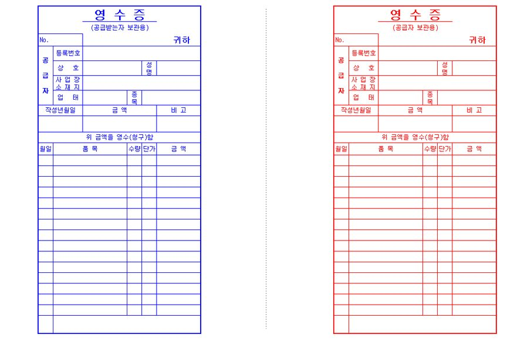
간이영수증 기본 양식 (왼쪽 청색 · 오른쪽 적색)
| 구분 | 1장당 금액 | 설명 |
|---|---|---|
| 일반 비용 | 3만원 이하 | 받으실 때 꼭 1장당 3만원 이하로 받으세요. |
| 접대 비용 | 3만원 이하 | 접대비 증빙도 같은 기준입니다. 3만원을 넘으면 적격증빙이 필요합니다. |
5. 경조사비
| 구분 | 증빙 | 1건당 금액 | 비고 |
|---|---|---|---|
| 거래처 | 청첩장, 돌잔치·조사 안내 문자·문서, 개업식 안내문 등 | 20만원 이하 | 위 증빙을 모두 모아주셔야 접대비로 비용 처리됩니다. |
| 임직원 | 회사 경조사비 지급규정, 경조사 내용 | 사회통념상 타당한 범위 | 범위를 넘는 금액은 근로소득으로 보아 원천징수. 지급능력, 종업원 직위, 연봉 등을 종합해 판단합니다. |
서식: 경조사 기록대장 · 상품권 지급대장
결혼식·돌잔치는 청첩장·초대장을 복사해 첨부하고, 장례식은 받은 문자를 캡처해 출력·첨부해 주세요.
경조사 기록대장
| 구분 | 성명 | 종류 | 일시 | 장소 | 금액 | 비고 |
|---|---|---|---|---|---|---|
| 1 | ||||||
| 2 | ||||||
| 3 | ||||||
| 4 | ||||||
| 5 | ||||||
| 6 | ||||||
| 7 | ||||||
| 8 | ||||||
| 9 | ||||||
| 10 | ||||||
| 11 | ||||||
| 12 |
상품권 지급대장
예시) 홍길동 / 2027-01-05 / 강남 식당 / 길동물산 담당 과장님 / 200,000원
| 구분 | 성명 | 지급일 | 전달장소 | 내용(거래처·직책·성함) | 지급액 | 비고 |
|---|---|---|---|---|---|---|
| 1 | ||||||
| 2 | ||||||
| 3 | ||||||
| 4 | ||||||
| 5 | ||||||
| 6 | ||||||
| 7 | ||||||
| 8 | ||||||
| 9 | ||||||
| 10 | ||||||
| 11 | ||||||
| 12 |
법인 체크포인트 — 세무조정에서 가장 자주 걸리는 6가지
법인은 대표님 개인 돈과 회사 돈의 경계가 흐려질 때 세금 문제가 생깁니다. 아래 6가지만 지켜도 세무조정과 세무조사 리스크가 크게 줄어듭니다.
① 대표·임원 보수와 상여
| 쟁점 | 핵심 | 근거 |
|---|---|---|
| 이익처분 상여 | 이익잉여금 처분으로 임원·직원에게 지급하는 상여는 손금이 안 됩니다. | 법인세법 시행령 제43조 제1항 |
| 임원 상여 지급기준 | 임원 상여 중 정관·주주총회·이사회 결의로 정한 급여지급기준을 초과한 금액은 손금불산입. 주총의 “이사 보수한도”만으로는 지급기준이 되기 어렵다는 판례가 있습니다. | 시행령 제43조 제2항 |
| 지배주주 과다보수 | 지배주주등(특수관계 포함)인 임원에게 정당한 사유 없이 같은 직위의 지배주주 외 임원·직원보다 많이 주면 초과분이 손금불산입. | 시행령 제43조 제3항 |
| 비상근 임원 | 상근이 아닌 임원 보수는 부당행위계산 부인 대상이 아니면 손금 인정. | 시행령 제43조 제4항 |
실무 팁: 정관 또는 주주총회 의사록으로 임원 보수·상여 지급규정을 만들어 두세요. 대표님 급여를 급하게 올리거나 연말에 한 번에 상여를 주면 지급기준 위반으로 부인될 수 있습니다.
② 임원 퇴직금 — 정관·퇴직급여지급규정을 먼저
(상여 중 한도초과분 제외)60,000,000원
10년60,000,000원
※ 정관 또는 정관에서 위임된 퇴직급여지급규정에 금액·계산기준이 있으면 그 금액이 한도(법인세법 시행령 제44조 제4항·제5항).
- 임원 퇴직급여는 현실적으로 퇴직한 경우에 손금산입합니다(연임·계속근무 상태의 퇴직금 지급은 현실적 퇴직이 아님. 퇴직금 지급 후 계속 근무하면 가지급금으로 보아 인정이자를 계산합니다).
- 정관에 퇴직금 금액·계산기준이 있거나 정관에서 위임한 퇴직급여지급규정이 있으면 그 금액이, 없으면 퇴직 직전 1년 총급여 × 1/10 × 근속연수가 한도입니다(시행령 제44조 제4항·제5항, 국세청 퇴직소득 안내).
- 퇴직 직전에 급여를 갑자기 올리거나 규정을 급하게 개정해 과다하게 지급하면 한도 초과로 부인될 수 있습니다(대법원 판례).
③ 가지급금과 인정이자
당좌대출이자율 4.6%4.6%
1억원 × 4.6%4,600,000원
근로소득세 추가소득세·4대보험 영향
※ 약정 이자를 받으면 인정이자와의 차액만 익금. 원칙은 가중평균차입이자율, 선택에 따라 당좌대출이자율. 원문 대조 필요 항목은 검토용 부록 참고.
| 쟁점 | 내용 |
|---|---|
| 가지급금이란 | 회사 돈이 대표님·임원·직원 등에게 업무와 무관하게 나가서 아직 정산되지 않은 돈(대여금, 개인 사용 법인카드, 증빙 없는 인출 등) |
| 세무상 불이익 | ① 인정이자 익금산입(이자를 안 받아도 받은 것으로 계산) ② 인정이자가 대표 상여로 처분되면 근로소득세·4대보험 영향 ③ 가지급금 관련 지급이자 손금불산입 ④ 대표 개인 신용·법인 신용에도 부담 |
| 정리 방법 | 급여·상여·배당으로 상계(요건 필요), 현금 상환, 대여약정서 작성 후 약정이자 수취, 퇴직금 지급규정 정비 후 정산 등. 정리 방법은 사전 상담 후 진행하세요. |
| 예방 | 법인 계좌와 개인 계좌를 섞지 않기, 증빙 없는 출금 만들지 않기, 개인카드 결제는 반드시 자료 전달 |
④ 기업업무추진비(접대비)
중소기업36,000,000원
연 매출 10억원 × 0.3%3,000,000원
※ 건당 3만원 초과 시 적격증빙 필수(법인카드·세금계산서 등). 문화 접대비 추가 한도 등은 별도 확인.
- 한도: 기본한도(중소기업 3,600만원) + 수입금액 × 0.3%(100억원 이하 구간). 한도를 넘으면 손금불산입됩니다.
- 증빙: 건당 3만원 초과는 법인카드·세금계산서·현금영수증이 필수입니다. 경조사비는 20만원까지 청첩장 등 증빙과 함께 인정됩니다.
- 상품권은 지급대장(10장)을 반드시 작성하세요. 누구에게 어떤 목적으로 줬는지 적어두지 않으면 접대비로 인정받기 어렵습니다.
⑤ 법인카드 사적 사용
- 개인적 사용(마트·가족 식사·개인 쇼핑)은 비용으로 인정되지 않고 대표 상여 또는 가지급금이 되며, 부가가치세 매입세액도 공제되지 않습니다.
- 주말·심야·휴가철 사용, 거래처가 불분명한 식대는 조사 시 소명 요구 대상입니다. 누구와 무슨 목적이었는지 카드 영수증 뒤에 메모해 주세요.
⑥ 법인 차량·세금계산서·주주 변동
- 법인 차량은 09장의 기준(업무전용보험 1대부터, 운행기록부)을 확인하세요. 보험을 놓치면 해당 차량 비용이 전액 부인될 수 있습니다.
- 주주 변동이 있으면 법인세 신고 때 주식 등 변동상황명세서를 제출해야 하고(06장 가산세 참고), 배당을 지급하면 원천징수와 이자·배당 지급명세서(3/2) 제출이 필요합니다.
참고: 법인세 계산 예시
2억원 × 10%20,000,000원
1억원 × 20%20,000,000원
법인세의 10%(약식)4,000,000원
※ 과표 200억원 초과분 22%, 3,000억원 초과분 25%. 지방소득세는 과세표준 구간별 세율 적용(약식 10%).
법인세 3/31, 법인지방소득세 4/30에 신고·납부하며, 신고 후에도 사후검증 대상이 될 수 있습니다. 다음 장에서 신고 후 절차를 정리했습니다.
신고 후 사후검증과 세무조사 대비
세무조사는 “탈세한 사람만” 받는 것이 아닙니다. 신고내용 분석에서 이상 징후가 보이면 안내문이나 소명 요구가 먼저 오고, 정기 조사 대상으로 선정될 수도 있습니다. 평소에 증빙을 갖추고 있으면 대부분 차분히 넘어갑니다.
1. 세무서에서 우편·연락이 오면
| 단계 | 행동 |
|---|---|
| ① 즉시 공유 | 우편물·전화·문자를 받으면 내용을 사진으로 찍어 단톡방에 바로 보내주세요. 기한(회신·출석)이 적혀 있습니다. |
| ② 임의 답변 금지 | 대표님이 먼저 설명하거나 자료를 고쳐 보내지 마세요. 세무사가 내용을 확인한 뒤 소명 자료를 같이 준비합니다. |
| ③ 자료 보존 | 장부·증빙을 폐기하거나 사후에 만들어 넣지 마세요. 부정행위로 판단되면 가산세와 제척기간이 크게 늘어납니다. |
2. 세무조사 절차 (국세기본법)
| 절차 | 내용 | 근거 |
|---|---|---|
| 사전통지 | 조사 개시 15일 전에 조사대상 세목, 조사기간, 조사 사유 등을 통지합니다. 증거인멸 우려 등 예외가 있습니다. | 국세기본법 제81조의7 제1항 |
| 조사연기 신청 | 천재지변, 질병, 장기출장 등으로 조사를 받기 곤란하면 조사 개시 전까지 연기를 신청할 수 있고, 승인 여부를 개시 전에 통지합니다. | 제81조의7 제2·3항 |
| 조사 시작 | 조사원증 제시 → 납세자권리헌장 교부·낭독 → 조사사유·기간·권리구제 절차 설명. 세무대리인의 참여·의견진술이 가능합니다. | 제81조의2 제3항, 국세행정서비스헌장 |
| 조사기간 | 연간 수입금액이 100억원 미만이면 20일 이내. 장부 은닉, 거래처 조사·금융거래 현지확인 필요 등 사유가 있으면 연장할 수 있고, 연장·중지는 서면 통지됩니다. | 제81조의8 |
| 결과 통지 | 조사 종료 후 서면으로 결과를 통지하며(통상 20일 이내), 이의가 없으면 통지 후 30일이 지나 납세고지서가 발부됩니다. 불복하면 과세전적부심사·이의신청·심사청구 등을 할 수 있습니다. | 국세행정서비스헌장, 국세청 안내 |
정기 세무조사 시기선택제 등 국세청이 운영하는 제도(조사 시기 선택, 일정 요건 중소기업 조사 유예 등)는 요건과 신청 기한이 해마다 바뀝니다. 안내문을 받으시면 바로 알려주세요. 대상 여부를 확인해 신청해 드립니다.
3. 신고를 잘못했거나 놓쳤다면 — 빨리 고칠수록 유리합니다
| 구분 | 가산세 | 감면 (자진 신고) |
|---|---|---|
| 무신고 | 일반 20% (부당 40%) | 기한 후 신고: 법정신고기한 후 1개월 이내 50% · 3개월 이내 30% · 6개월 이내 20% 감면 |
| 과소신고·초과환급 | 일반 10% (부당 40%) | 수정신고: 1개월 이내 90% · 3개월 이내 75% · 6개월 이내 50% · 1년 이내 30% · 1년 6개월 이내 20% · 2년 이내 10% 감면 |
| 납부지연 | 미납세액 × 경과일수 × 1일 0.022% (22/100,000) | 기한 내 납부하거나 최대한 빨리 납부 |
가산세 감면은 과세관청이 경정·결정할 것을 미리 알고 신고한 경우에는 받을 수 없습니다. — 국세기본법 제48조, 법인세법 시행규칙 별지 제9호서식 작성방법
4. 과세할 수 있는 기간 (부과제척기간)
| 구분 | 기간 |
|---|---|
| 일반 (정상 신고, 과소신고) | 국세를 부과할 수 있는 날부터 5년 |
| 무신고 (법정신고기한까지 과세표준신고서 미제출) | 7년 |
| 사기·부정행위로 포탈 또는 환급·공제 | 10년 (역외거래 15년) |
| 부정행위로 법인세를 포탈한 경우, 상여로 처분된 금액에 대한 소득세 | 10년 |
장부와 증거서류는 법정신고기한이 지난 날부터 5년(역외거래는 7년) 보존해야 합니다(국세기본법 제85조의3).
5. 세무조사·사후검증 대비 체크리스트
| 자료 | 확인할 점 | 준비 시점 |
|---|---|---|
| 증빙서철·적격증빙 | 3만원 초과 거래의 적격증빙 여부, 간이영수증 한도 | 매월 |
| 법인카드 사용내역 | 개인 사용 여부, 업무 목적 메모, 주말·심야 사용 | 매월 |
| 업무용승용차 | 업무전용보험 가입(1대부터), 운행기록부, 임차 계약서 | 매월·연말 |
| 가지급금·가수금 | 대표 계좌와의 거래, 인정이자 처리, 대여약정서 | 분기 |
| 임원 보수·상여·퇴직금 | 정관·주총 의사록, 급여지급기준, 퇴직급여지급규정 | 연 1회 |
| 접대비 명세 | 경조사 청첩장, 상품권 지급대장, 거래처 명단 | 매월 |
| 주주명부·주식 변동 | 주주 변동 시 계약서·명세서, 배당 지급 증빙 | 변동 시 |
| 인건비 | 근로계약서, 급여대장, 4대보험 신고, 원천세·지급명세서 | 매월 |
| 계약서 | 임대차계약, 용역계약, 리스·렌트 계약 | 계약 시 |
고용 형태별 세금과 4대보험
| 구분 | 급여 지급 방식 | 4대보험 | 신고·증빙 |
|---|---|---|---|
| 일용직 (1개월 미만) | 일당 지급, 소득세 원천징수 (일당 15만원 공제 후 6%, 세액공제 55% → 일당 약 18.7만원 이하 세액 0) | 고용·산재 (요건 충족 시 건보·연금) | 매월 15일 근로내용확인신고, 지급명세서 |
| 상용직 (정규직·계약직) | 월급, 간이세액표 원천징수 | 4대보험 전부 가입 | 입사 후 14일 이내 취득신고, 근로계약서 작성 |
| 단시간 근로자 (주 15시간 미만) | 시급×시간, 초단시간 근로자 별도 기준 | 원칙적으로 고용보험 제외 등 예외 있음 | 계약서에 근로시간 명시 |
| 프리랜서 (사업소득 3.3%) | 3.3% 원천징수 | 가입 대상 아님(실질이 근로자면 근로자로 판단) | 사업소득 지급명세서(다음 달 말) |
| 대표이사·임원 | 임원 보수 지급 → 09장·11장 참고 | 건보·연금 가입, 고용·산재는 요건별로 상이 | 급여대장·정관·주총 결의 보관 |
출퇴근·업무지시·시간 통제를 받으면 계약서 제목과 관계없이 근로자로 봅니다. 이 경우 4대보험·퇴직금·연차 의무가 생기므로 계약 형태를 먼저 사무소와 상의해 주세요.
근로계약서 작성
근로계약을 맺을 때에는 임금, 소정근로시간, 휴일, 연차유급휴가 등 근로조건을 서면으로 명시하고 교부해야 합니다(근로기준법 제17조). 위반 시 과태료 대상이 될 수 있습니다.
| 필수 항목 | 작성 요령 |
|---|---|
| 임금 | 구성항목(기본급·수당), 계산방법, 지급방법, 지급일을 구체적으로 |
| 소정근로시간·휴게 | 시업·종업 시각, 휴게시간, 주 소정근로시간 |
| 휴일·연차 | 주휴일, 근로자의 날(유급), 연차유급휴가 |
| 근무 장소·업무 | 근무 장소와 종사할 업무 |
| 수습·계약기간 | 수습 기간(최저임금의 90% 적용 가능 여부는 계약기간 조건 확인), 기간제는 계약 기간 명시 |
| 기타 | 교부 시기(체결 즉시), 사본 보관, 취업규칙(상시 10인 이상) 연계 |
직원이 한 명이어도 계약서는 필수입니다. 근로감독이나 임금 분쟁 시 가장 먼저 요구되는 서류입니다. 사무소에 요청하시면 표준 양식을 드립니다.
4대보험 가입과 보험료
5.0% / 5.0%110,000 / 110,000
3.595% / 3.595%79,090 / 79,090
건강보험료×13.90%10,990 / 10,990
1.15% / 0.9%25,300 / 19,800
업종별(1% 가정)22,000 / -
※ 장기요양·건강보험료는 10원 미만 절사, 산재요율은 업종별 상이. 근로자수 150인 미만 기준.
| 항목 | 내용 |
|---|---|
| 월 220만원 예시 | 회사 부담 247,380원 / 직원 부담 219,880원 (2027 요율 기준 계산, 위 표 참고) |
| 취득·상실 | 입사일 기준 취득신고(입사 후 14일 이내), 퇴사 시 상실신고 |
| 보수총액 신고 | 매년 3월 10일까지 전년도 보수총액 신고 → 보험료 정산 |
| 비과세 급여 | 식대 월 20만원, 자가운전보조금 월 20만원, 6세 이하 보육수당 등은 과세·보험료 부과 대상에서 제외 (소득세법 시행령 제12조) |
| 소득 변동 | 연봉 인상·상여 지급 시 보수월액 변경 반영 |
대표이사 1인 법인은 고용·산재가 제외되거나 임의가입인 경우가 많습니다. 급여 설계와 함께 사무소가 가입 여부를 안내합니다.
연차휴가
| 구분 | 연차 기준 (근로기준법 제60조) |
|---|---|
| 입사 1년 미만 | 1개월 개근 시 1일씩 (최대 11일) |
| 1년 이상, 80% 이상 출근 | 15일 |
| 3년 이상 근속 | 2년마다 1일 가산 (최대 25일) |
| 5인 미만 사업장 | 연차 규정이 적용되지 않음 — 19장 상시근로자 수별 적용표 참고 |
| 미사용 연차 | 사용 촉진 절차를 거치지 않으면 수당 지급 의무 |
① 연차 소멸 6개월 전: 근로자별 미사용 일수 서면 통지 → 10일 이내 사용 시기 제출 요구
② 소멸 2개월 전: 사용 시기 미지정 시 사업주가 사용 시기를 정해 서면 통지
③ 기록 보관 — 촉진 서면이 있어야 미사용수당 지급 의무가 없습니다.
퇴직금과 퇴직연금
| 구분 | 내용 |
|---|---|
| 지급 대상 | 계속근로기간 1년 이상, 주 15시간 이상 근로한 근로자 |
| 퇴직금 계산 | 1일 평균임금 × 30일 × (재직일수 ÷ 365) |
| 지급 기한 | 퇴직일로부터 14일 이내 (당사자 합의로 연장 가능) |
| 퇴직연금(DC/DB) | 연금 가입 법인은 매년 부담금 납입, 세무상 손금 산입 한도 확인 |
| 임원 퇴직금 | 정관 또는 주총 결의에 따른 퇴직급여 규정 필요 (한도 초과분은 손금불산입) → 23장 참고 |
퇴사와 실업급여(구직급여)
| 항목 | 내용 |
|---|---|
| 수급 요건 | 이직 전 18개월 중 고용보험 피보험단위기간 180일 이상 + 비자발적 이직 (고용보험법 제40조) |
| 소정급여일수 | 50세 미만 120~240일 / 50세 이상 및 장애인 120~270일 (가입기간별) |
| 1일 구직급여 | 평균임금의 60%, 상·하한액 적용 (하한은 최저임금의 80%×8시간 기준, 상한은 고시) |
| 회사가 챙길 것 | 상실신고, 이직확인서 제출(퇴사 후 10일 이내), 이직 사유 정확히 기재 |
이직확인서의 사유는 실업급여 수급과 사업주 지원금 모두에 영향을 줍니다. 해고·권고사직·계약만료·자진퇴사를 사실대로 기재하세요. 허위 기재는 지원금 환수·제재 사유입니다.
인사서식 · 근로감독 · 법정의무교육
아래 서식은 사무소에 요청하시면 양식을 드립니다. 직접 작성하실 때는 날짜·서명(날인)·보관만 지켜도 분쟁 위험이 크게 줄어듭니다.
| 번호 | 서식 | 용도 |
|---|---|---|
| ① | 근로계약서 | 입사 시 작성·교부 |
| ② | 연차 사용 촉진 통지서 | 연차 소멸 6개월·2개월 전 |
| ③ | 임금대장·임금명세서 | 매월 지급 시 교부 (근로기준법 제48조) |
| ④ | 사직서 | 자진퇴사 시 (이직 사유 증빙) |
| ⑤ | 인수인계서 | 퇴사·부서 이동 시 |
| ⑥ | 시말서·징계 통지서 | 징계 시 절차 기록 |
| ⑦ | 해고 통지서 | 해고 시 서면 통지 필수 (근로기준법 제27조) |
| ⑧ | 퇴직금 정산서 | 퇴직금 지급 시 |
근로감독·점검 대비
- 상시 비치 서류: 근로계약서, 임금대장, 출퇴근 기록, 취업규칙(10인 이상), 연차 관리대장
- 임금 지급 원칙: 매월 1회 이상, 일정한 기일, 통화로 직접 전액 지급
- 근로시간: 주 40시간 + 연장 12시간(합의 시) 한도, 연장·야간·휴일근로 가산수당 1.5배
- 임금명세서 교부: 서면(전자 포함)으로 매월 교부
상시근로자 수별 적용 법규
| 법규 | 5인 미만 | 5인 이상 | 10인 이상 | 30인 이상 | 50인 이상 |
|---|---|---|---|---|---|
| 근로계약서·임금 | ✓ | ✓ | ✓ | ✓ | ✓ |
| 연차·연장수당·해고제한 | — | ✓ | ✓ | ✓ | ✓ |
| 취업규칙 작성·신고 | — | — | ✓ | ✓ | ✓ |
| 노사협의회 | — | — | — | ✓ | ✓ |
| 중대재해처벌법 | — | ✓ | ✓ | ✓ | ✓ |
법정 의무 교육
| 교육 | 주기 | 비고 |
|---|---|---|
| 산업안전보건교육 | 사무직 매반기 6시간 이상 / 관리감독자 연 16시간 등 | 산업안전보건법 시행규칙 별표4 |
| 성희롱 예방교육 | 연 1회 이상 | 10인 미만·남녀 한쪽 성별만 고용 시 자료 게시·전달로 대체 가능 |
| 개인정보 보호교육 | 연 1회 이상 | 개인정보 취급자 대상 |
| 직장 내 괴롭힘 예방교육 | — | 법정 의무는 아니나 취업규칙 규정·예방 조치는 필요 |
창업중소기업 세액감면
| 항목 | 내용 (조세특례제한법 제6조) |
|---|---|
| 대상 | 수도권 과밀억제권역 밖 창업 중소기업 또는 청년창업 |
| 감면율 | 5년간 법인세 50% (청년창업 등 요건 충족 시 100%) |
| 법인 청년창업 | 대표자가 청년이면서 최대주주 요건 충족 필요 |
| 부천 소재 | 수도권과밀억제권역에 해당 → 감면 폭 확인 필요 |
| 사후관리 | 업종·고용 유지, 최저한세, 농특세 별도 |
통합고용세액공제 · 두루누리
| 구분 | 수도권 | 지방 |
|---|---|---|
| 중소 상시근로자 (청년 등) | 1,450만원 | 1,550만원 |
| 중소 상시근로자 (그 외) | 850만원 | 950만원 |
| 중견 (청년 등/그 외) | 800만원 / 450만원 | — |
상시근로자 증가 인원 × 공제액을 3년간 적용하며, 전체 고용이 유지되어야 합니다. 대표자·최대주주 및 그 특수관계인은 상시근로자에서 제외됩니다.
두루누리 · 기타 고용 지원
- 두루누리 사회보험료 지원: 10인 미만 사업장, 월 보수 270만원 미만 근로자의 고용·연금보험료 80% 지원
- 청년 추가고용·고용장려금 등은 해마다 요건이 바뀌므로 고용24 사이트에서 신청 전 확인
기업부설연구소 · 벤처 · 기업 인증
| 제도 | 핵심 | 근거·참고 |
|---|---|---|
| 기업부설연구소 | 연구전담요원 확보 + 독립공간, 인건비 세액공제 최대 25% | 조특법 제10조, 2026.2.1부터 「기업부설연구소등의 연구개발 지원에 관한 법률」 |
| 벤처기업 확인 | 창업 3년 내 확인 시 5년 법인세 50% 감면 등 | 조특법 제6조, 벤처기업법 제25조 |
| 이노비즈·메인비즈 | 정책자금·보증 우대 | 업력 3년 이상 |
| 여성·장애인기업 | 공공기관 우선구매 | 공공구매종합정보망 |
| 사회적기업·장애인표준사업장 | 법인세 감면 | 조특법 제85조의6 |
정부 인증·표창을 받은 중소기업은 정기 세무조사 선정을 유예하는 제도가 있습니다. 대상과 기간은 매년 국세청 발표가 달라 해당 연도 기준으로 확인해 드립니다.
대표님 보험 · 퇴직금 · 상속
- 법인이 계약자·수익자인 보험료는 보험 성격에 따라 자산(저축성) 또는 비용(보장성)으로 처리합니다.
- 대표이사 개인을 피보험자로 하고 법인이 낸 보험료는 상여로 보아 근로소득세가 과세될 수 있습니다.
임원 퇴직금 규정
- 정관 또는 주주총회 결의를 거친 임원 퇴직금 지급규정을 두면 손금 인정 범위가 명확해집니다. (법인세법 시행령 제44조)
- 규정이 없으면 퇴직 직전 1년 평균급여 × 10% × 근속연수 한도로 제한됩니다.
가업승계 · 상속 · 증여
- 법인 주식은 상속세·증여세 평가 대상이므로 설립 초기부터 주주 구성을 계획하세요.
- 가지급금이 큰 법인은 상속 시 대표님 재산에 반영되므로 정리 계획이 필요합니다.
- 가업상속공제·증여세 과세특례는 요건이 엄격하므로 해당 시점에 사무소와 상담하세요.
함께하는 전문가 네트워크
법인 운영에는 세금 옆에 늘 법률 분쟁, 등기, 노무, 평가, 재원 마련이 따라붙습니다. 담당 세무사가 먼저 상황을 진단하고 세금 영향을 정리한 뒤 필요한 전문가를 필요한 시점에 연결해 전체를 조율합니다. 각 전문가의 보수는 진행 전에 미리 안내합니다.
| 전문가 | 함께하는 일 | 연결 시점 |
|---|---|---|
| 변호사 | 유언·상속분쟁, 거래처 채권·계약 분쟁 | 다툼이 보이면 소송 전에 |
| 법무사 | 법인 등기(임원 변경·증자·본점 이전), 상속등기, 유언대용신탁 | 변경 사유 발생 즉시 |
| 노무사 | 근로계약·취업규칙, 4대보험 분쟁, 근로감독 대응, 해고·임금체불 분쟁 | 직원 채용 초기, 분쟁·감독 통지 즉시 (PART 4) |
| 감정평가사 | 상속·증여 부동산 감정평가 | 상속세·증여세 신고 전 |
| 자산관리 전문가 | 보험, 증권·투자 | 상속 개시 전 재원 설계 |
원제우세무사사무소는 법인 대표님의 세무·노무 파트너입니다. 이 안내서의 내용은 2026년 11월 기준이며, 법령 개정 시 업데이트됩니다.
아래는 본문에서 근거로 삼은 법령과 안내 자료입니다. 조문은 시행 시점에 법제처 국가법령정보센터(law.go.kr) 현행 원문으로 다시 확인해 주세요.
- 법인세법 제27조의2(업무용승용차), 제25조(기업업무추진비), 제52조(부당행위계산), 시행령 제43조·제44조·제50조의2 — law.go.kr
- 국세기본법 제26조의2, 제48조, 제81조의7·제81조의8 / 가산세율 — law.go.kr, 국세청(nts.go.kr)
- 소득세법 제47조(근로소득공제), 제59조의2(근로소득세액공제), 시행령 제12조(비과세 급여) — law.go.kr
- 근로기준법 제17조(근로조건 명시), 제27조(해고 통지), 제48조(임금명세서), 제60조(연차유급휴가) — law.go.kr
- 최저임금법 제5조(수습 기간 감액), 2027년 최저임금 10,700원 — 고용노동부 고시
- 고용보험법 제40조(구직급여 수급 요건), 근로자퇴직급여 보장법 — law.go.kr, 고용노동부(moel.go.kr)
- 산업안전보건법 시행규칙 별표 4(안전보건교육) — law.go.kr
- 조세특례제한법 제6조(창업중소기업 감면), 제10조(연구·인력개발비 세액공제), 제29조의8(통합고용세액공제), 제85조의6(사회적기업 등) — law.go.kr
- 벤처기업육성에 관한 특별법 제25조(벤처기업 확인), 기업부설연구소등의 연구개발 지원에 관한 법률(2026.2.1. 시행)
- 2027 4대보험 요율 — 국민연금공단, 국민건강보험공단, 근로복지공단 / 건강보험료율 7.19%, 장기요양보험료율 0.9994% 보건복지부 발표
- 국세청 홈택스(hometax.go.kr) 안내, 세무사 사무소 보유 2026 법인 안내서, 개인사업자 안내서 v2.8